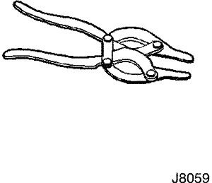
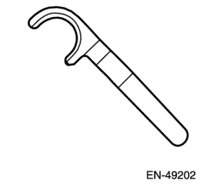
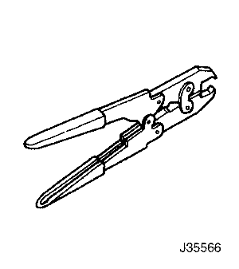
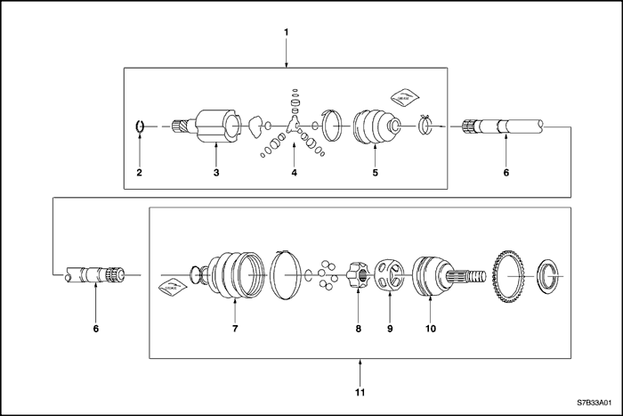
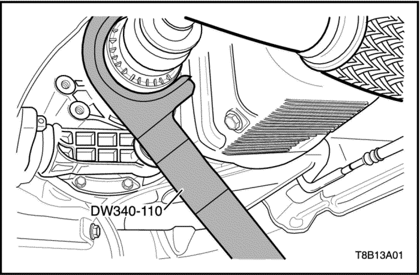

SECCIÓN 3A
EJE DE DIRECCIÓN DEL TRANSEJE AUTOMÁTICO
ESPECIFICACIONES
Especificaciones de apriete
|
Aplicación
|
N•m
|
Árbol de transmisión izquierdo
|
Articulación
|
|
Tuerca ciega del palier
|
300
|
221
|
-
|
|
Tuerca de la rótula inferior
|
50
|
37
|
-
|
|
Tuerca del tirante
|
45
|
33
|
-
|
|
Tuercas de las ruedas
|
120
|
88
|
-
|
HERRAMIENTAS ESPECIALES
Tabla de herramientas especiales

 
|
J-8059
Alicates para anillos elásticos
|

|
KM-507-B
Extractor de rótulas
|

|
EN-49202
Extractor del eje de accionamiento
|

|
J-35566
Alicates para abrazaderas de guardapolvos
|
LOCALIZADOR DE COMPONENTES
Eje de dirección delantero

- Conjunto de la junta de trípode
- Anillo elástico de retención
- Alojamiento del trípode
- Conjunto del trípode
- Junta interior
- Palier
- Junta exterior
- Caja
- pista interior
- Pista exterior
- Conjunto de la junta homocinética
MANTENIMIENTO Y REPARACIÓN
servicio con vehículo en marcha

Conjunto de eje de dirección
Herramientas necesarias
Separador de rótulas KM-507-B
Extractor del palier DW340-110
Procedimiento de desmontaje
- Levante y apoye el vehículo adecuadamente.
- Desmonte las ruedas. Consulte la sección 2E, Neumáticos y ruedas.
- Desmonte la cubierta inferior del motor. Consulte la sección 9N, Bastidor y bajos de la carrocería.

- Quite la tuerca ciega del palier. Deseche la tuerca.
- Quite la tuerca de la rótula inferior.

Aviso: Para la separación de la rótula inferior, utilice únicamente la herramienta recomendada. De no utilizar esta herramienta, se pueden ocasionar daños a la rótula y a la junta.
- Separe la mangueta de la rótula inferior utilizando el separador de rótulas KM-507-B.
- Quite la tuerca del tirante.

Aviso: Utilice solamente la herramienta recomendada para separar el tirante del conjunto de mangueta/soporte de la suspensión. Si no se emplea la herramienta recomendada, el conjunto de mangueta/soporte podría resultar dañado.
- Separe el tirante empleando el separador de rótulas KM-507-B.

- Quite el tornillo y la tuerca de conexión del bloque amortiguador.
- Quite los tornillos del soporte de fijación trasero y desmonte el soporte.

- Empuje el palier desde el cubo de la rueda.
Importante: Apoye el extremo no fijado del árbol de transmisión. No deje que éste cuelgue libremente de la caja de cambios por más tiempo después de haber sido desmontado del cubo de rueda.
Importante: Coloque una bandeja de drenaje debajo de la caja de cambios para recoger el aceite que salga. Tape la abertura para el accionamiento de la caja de cambios después de haber desmontado el árbol de transmisión para que no se salga el aceite y entre suciedad.
- Desmonte el árbol de transmisión de la caja de cambios utilizando el extractor del palier de accionamiento EN-49202.

procedimiento de montaje
Aviso: No dañe los retenes.
- Limpie el retén del cubo y el retén de la caja de cambios.
- Monte el árbol de transmisión en la caja de cambios.
- Monte el cubo de la rueda en el palier.

- Coloque los tornillos del soporte de fijación trasero y monte el soporte.
Apretar
Apriete los tornillos del soporte de fijación traseros hasta 60 N•m (44 lb-pie).
- Coloque el tornillo y la tuerca de conexión del bloque amortiguador.
Apretar
Apriete el tornillo y la tuerca de conexión del bloque amortiguador hasta 80 N•m (59 Lb-pie).

- Monte la mangueta en la rótula inferior.

- Monte el tirante en la mangueta/soporte y coloque la tuerca del tirante.
Apretar
Apriete la tuerca del tirante hasta 45 N•m (33 Lb-pie).

- Coloque la tuerca de la rótula inferior.
Apretar
Apriete la tuerca de la rótula inferior hasta 50 N•m (37 Lb-pie).

- Coloque sin apretar mucho una tuerca ciega del palier nueva. Utilice siempre tuercas nuevas.
- Monte las ruedas. Coloque las tuercas sin apretarlas mucho. Consulte la sección 2E, Neumáticos y ruedas.
- Baje el vehículo al suelo.
Apretar
Apriete las tuercas de las ruedas hasta 120 N•m (88 Lb-pie).
- Apriete la tuerca ciega del palier hasta 300 N•m (221 Lb-pie).
- Martillee la tuerca ciega con un botador y un martillo hasta que la tuerca encaje en el cubo del palier.
- Monte la cubierta inferior del motor. Consulte la sección 9N, Bastidor y bajos de la carrocería.
- Rellene de aceite la caja de cambios hasta el nivel correcto. Consulte la sección 5A, Caja de cambios automática AISIN.
REPARACIÓN DE LA UNIDAD

Junta hermética exterior
Herramientas necesarias
Alicates para anillos elásticos J-8059
Alicates para abrazaderas de guardapolvos J-35566
Procedimiento de desmontaje
- Desmonte el árbol de transmisión del vehículo. Consulte el apartado "Conjunto del árbol de transmisión" en esta sección.
- Desmonte la abrazadera grande del guardapolvo. Deseche la abrazadera.
- Desmonte la abrazadera pequeña del guardapolvo. Deseche la abrazadera.

- Desengrase la junta.
- Abra el anillo elástico con los alicates de anillos elásticos J-8059 y desmonte la junta exterior del palier.
Precaución:
No desacople el conjunto de la junta exterior. Las piezas van emparejadas y no pueden repararse por separado. Si se vuelven a ensamblar incorrectamente afectarían negativamente tanto a la seguridad como al rendimiento.
- Desmonte el guardapolvo del conjunto de la junta.
procedimiento de montaje
- Monte el guardapolvo en el palier.
- Abra el anillo elástico con los alicates de anillos elásticos J-8059 y desmonte la junta exterior del palier.
- Rellene la junta guardapolvo con 110-130 g (3,9-4,6 onzas) de la grasa recomendada. Rellene la junta con 110-130 g (3,9-4,6 onzas) de la grasa recomendada.
- Coloque dos abrazaderas de guardapolvo nuevas, una grande y otra pequeña.
- Aplaste las abrazaderas nuevas pequeña y grande del guardapolvo con los alicates para abrazaderas de guardapolvos J-35566.
- Monte el palier en el vehículo. Consulte el apartado "Conjunto del árbol de transmisión" en esta sección.

Junta de trípode interior
Herramientas necesarias
Alicates para anillos elásticos J-35566
Alicates para anillos elásticos J-8059
Procedimiento de desmontaje
- Desmonte el árbol de transmisión del vehículo. Consulte el apartado "Árbol de transmisión" de esta sección.
- Desmonte la abrazadera grande del guardapolvo. Deseche la abrazadera.
- Desmonte la abrazadera pequeña del guardapolvo. Deseche la abrazadera.

- Separe el alojamiento de la junta del guardapolvo.

- Desengrase el conjunto del trípode.
- Desmonte el anillo elástico de retención del eje utilizando los alicates para anillos elásticos J-8059.

- Desmonte del palier el trípode y el anillo elástico de la junta de trípode.
- Desmonte del palier el retén de la junta de trípode.
procedimiento de montaje
Herramientas necesarias
Alicates para anillos elásticos J-8059
Alicates para abrazaderas de guardapolvos J-35566
- Monte una abrazadera pequeña nueva en el guardapolvo.
- Monte el guardapolvo en el palier.
- Monte el anillo elástico de retención en el palier utilizando los alicates para anillos elásticos J-8059.
- Rellene el alojamiento del trípode con 195-215 g (6,9-7,6 onzas) de la grasa recomendada. Rellene el trípode con 195 - 215 g (6,9 - 7,6 onzas) de la grasa recomendada.
- Coloque la funda guardapolvo en el alojamiento de la junta.
- Monte una abrazadera grande de guardapolvo nueva. Aplaste la abrazadera grande del guardapolvo nueva con los alicates para abrazaderas de guardapolvos J-35566.
- Aplaste la abrazadera pequeña del guardapolvo nueva con los alicates para abrazaderas de guardapolvos J-35566.
- Monte el palier en el vehículo. Consulte el apartado "Conjunto del árbol de transmisión" en esta sección.
DESCRIPCIÓN GENERAL Y FUNCIONAMIENTO DEL SISTEMA
Eje de dirección delantero
Descripción general
Los árboles de transmisión son conjuntos de ejes flexibles que transmiten la fuerza giratoria de la caja de cambios a los conjuntos de las ruedas delanteras. Cada conjunto de árbol consta de una junta homocinética (junta de velocidad constante) exterior e interior conectadas a un palier. La junta interior es completamente flexible y tiene la capacidad de desplazarse hacia dentro y hacia fuera. La junta exterior es también flexible pero carece de esa posibilidad de desplazamiento.
Los árboles de transmisión utilizan un tipo de junta exterior y otro tipo distinto de junta interior. Los extremos interiores de ambos árboles de transmisión terminan en una estría hembra que se acopla al extremo del eje que sobresale de la caja de cambios.